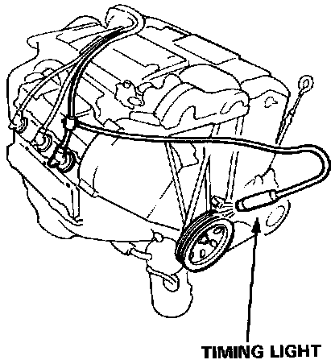
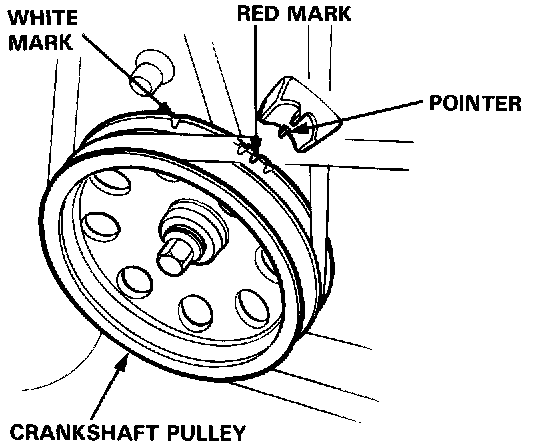
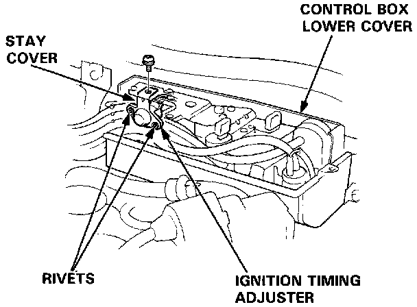
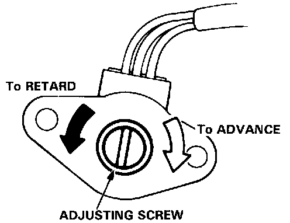

Coupe
Ignition Timing Inspection and Adjustment1. Start the engine and allow it to warm up (cooling fan comes on).

2. Connect a timing light to the engine; while the engine idles, point the light toward the pointer on the timing belt cover.

3. Inspection ignition timing at idle.
Ignition Timing:
15 ± 2°BTDC (RED) at 680 ± 50 rpm in neutral
4. Adjust ignition timing, if necessary, by turning the adjusting screw on the ignition timing adjuster in the control box.

5. Remove the control box upper cover and the ignition timing adjuster from the control box.
6. Drill the 2 rivets off with a 3/16 in drill bit, then separate the stay cover from the adjuster.
CAUTION: Do not damage the adjuster when removing the rivets.

7. Adjust as necessary by turning the adjusting screw on the adjuster; turn the adjusting screw counterclockwise to retard the timing, or clockwise to advance the timing.
8. After adjusting, reinstall the stay cover to the ignition timing adjuster with new rivets, then reinstall the adjuster to the control box.